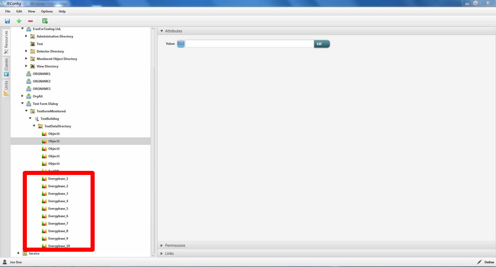

After pushing the button "Bulk Create" a table pop-ups, which enables the user to create one or many objects including their attributes.
It is necessary to define an object name, all other attributes can be left empty.
After pushing the button on the right down side "Create Structure" the object(s) will be created.


It is possible to export / import data from / to Excel Sheets.
This can be done simply using copy/paste (ctrl + c ,ctrl + p) functions.

Bulk Edit button enables the user to rename the object or make changes in the attributes.
After applying the necessary changes, pushing the button "Edit Structure" save the changes.

In special case of a Data Object :
First of all as usual the object will be renamed.
After that every coloum will be checked , if there is an input , which does not match the criteria of regarding attribute this area will be marked red.
Matching criteria for every column is listed below :
Display Prefixes : NONE, ZETTA, EXA, PETA, TERA, GIGA, MEGA, NANO, PICO, KILO, HECTO, DEKA, DECI, CENTI, MILLI, MICRO, NANOPICO, FEMTO, ATTO, ZEPTO, YOCTO
Units Link : http://www.openjevis.org/projects/openjevis/wiki/Units

Here are some examples of possible correct inputs.